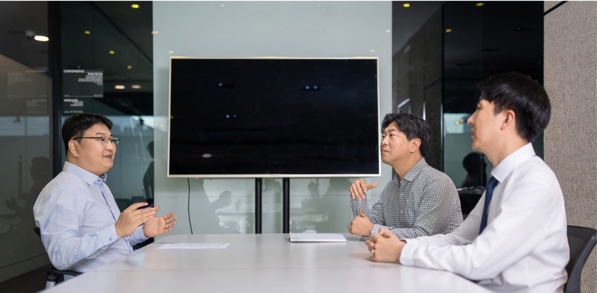
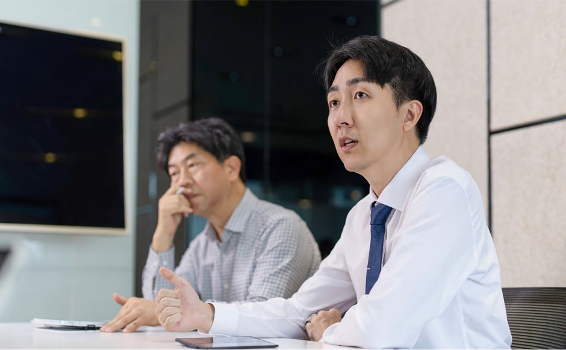
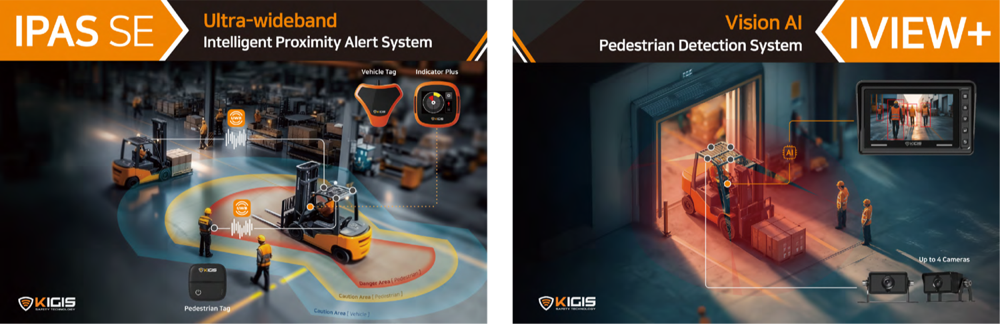
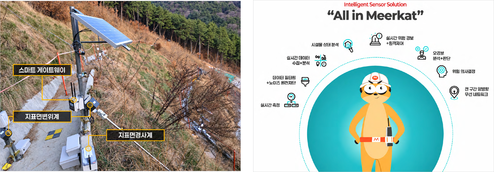
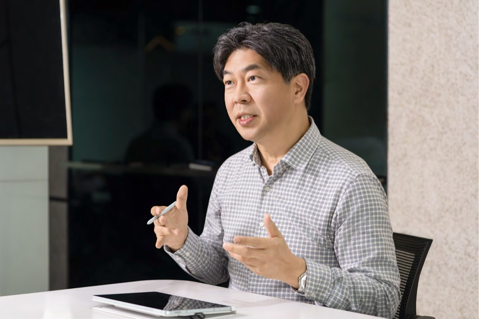
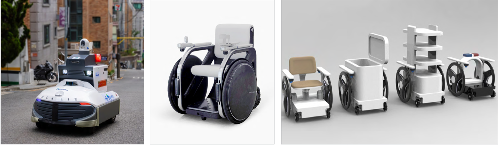
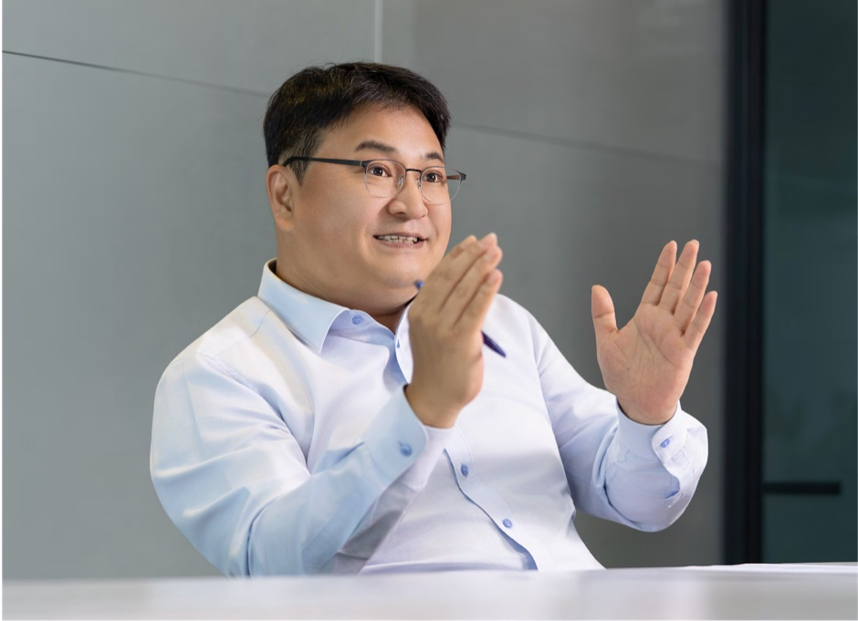

피지컬AI가 산업 전반의 화두로 떠오르면서, 재난안전 현장의 인공지능도 화면 속 분석을 넘어 현장의 장비와 로봇을 직접 움직이는 단계로 나아가고 있다. 지능형 CCTV와 AI 센서가 위험 징후를 먼저 알리고, 이동체가 ‘아차’ 사고를 예방하는 사례가 대표적이다. 하지만 노이즈와 오경보, 제도와 표준의 공백, 안전 투자에 대한 인식 부족이라는 벽은 여전히 높다. 건설·산업 현장에서 AIoT 센서와 접근경보 시스템을 개발해 온 두 기업인과, 자율주행·로봇 제어를 연구하는 학계 전문가가 한자리에 모여 ‘AI·피지컬AI 융합 재난안전기술과 산업 발전’의 현재와 과제를 짚었다.

AI·피지컬AI, 재난안전 현장을 어떻게 바꾸고 있나
“CCTV는 보는 눈에서 ‘이해하는 눈’으로, 그리고 움직이는 몸으로”
지능형 CCTV에 피지컬AI가 붙으면서
한양대학교 공과대학 전기생체공학부 강창묵 부교수
무인 이동체에 카메라를 올려
순찰하는 형태 등 다양한 플랫폼이
나오고 있습니다.

강창묵 부교수, (이하 ‘강창묵’) 재난안전 관련 연구는 갑자기 붐이 일었다기보다는, 예전부터 해 온 연구에 피지컬AI와 LLM(거대언어모델), VLM(시각-언어 모델)이 들어오면서 더 큰 관심을 받게 됐다고 봅니다. 예전 CCTV는 사람이 하나하나 모니터링하거나, 정해진 규칙에 따라 이벤트를 검출하는 수준이었어요. VLM이 들어오면서는 전체 상황을 요약하고, 문제가 생기면 어떤 상황이었는지 해석까지 해 줍니다. 스마트 CCTV에서 한 단계 올라선 지능형 CCTV가 하루 일과를 정리해 주는 형태로까지 발전하고 있죠.
여기에 피지컬AI가 붙으면서 무인 이동체에 카메라를 올려 순찰하는 형태를 시작으로 다양한 형태의 플랫폼이 나오고 있습니다. 중대재해처벌법이 시행되면서 건설 현장뿐 아니라 단기 시공 현장에서도 이런 요구가 늘고 있고요. 최근 박람회 행사를 준비하는 업체의 경우, 시공 과정에서 다치는 사람이 없어야 하고 사다리 사용 같은 규칙도 지켜져야 하니, 이동형 자율주행체로 현장을 감시해 달라는 요청이었습니다. 뿐만 아니라 인력이 줄고 있는 지역에서는 감시·정찰에 순찰 로봇이나 지능형 CCTV를 쓰자는 수요가 계속 늘어나고 있습니다. 관련 기술을 적극적으로 도입하여 다양한 기관에 제공하고자 하는 기업에서는 LLM·VLM 기반 안전 시스템을 공동연구개발 하자며 대학에 요청해 오는 경우도 있고요.
이정욱 이사, (이하 ‘이정욱’) 저희는 충돌·협착 사고 예방에 집중해 왔습니다. 건설 현장의 중장비끼리, 혹은 중장비와 작업자 사이의 사고입니다. 2015~16년쯤 시작했고, 2017년에 ‘키지스(KIGIS)’라는 산업안전 브랜드를 론칭하면서 본격화했어요. 중장비는 즉시 처리가 중요해서 처음부터 장비 쪽, 즉 엣지(Edge) 단에서 영상 AI로 사람을 인식하고 분류하는 데서 출발했죠. 최근에는 VLM·LLM이 나오면서 맥락을 분석해 사고를 예측하는 단계로 가고 있습니다. 대학들과의 공동 기술 개발도 활발합니다.
다만 사고를 예측해도 막을 수 없는 경우가 많습니다. 지게차와 사람이 부딪히기 3초 전에 예측해도, 사람이 인지하지 못하면 그대로 사고가 나니까요. 그런 점에서 자동으로 감속하고 제동까지 제어하는 능동 제어가 재난안전 ‘피지컬AI’라고 생각하고 있습니다. 실제 이를 기반으로 한 수요처의 니즈도 상당히 늘고 있죠.

서버에 닿기 전, 현장에서 위험을 판단하는 기술
“사고 후 분석에서 사고 전 경보로…‘살아 있는 데이터’가 안전관리의 패러다임을 바꾼다”
정인근 대표, (이하 ‘정인근’) 저희는 시설물 안전관리에서 측정한 데이터를 어디에서, 어떤 목적과 방식으로 활용할 것인가에 주목했습니다. 시설물을 위험을 관리하기 위한 수단으로는 기존의 계측 시스템이 대표적입니다. 이는 현장에서 측정한 데이터를 서버에 수집하고, 전문가의 분석을 통해서 시설물의 상태를 평가하거나 이력을 관리하는 방식이 안전관리의 중심이었습니다. 반면 저희가 2016년부터 개발해 온 ‘미어캣’은 서버로 데이터를 전송하기 전에 현장에서 측정·분석·판단·위험경보까지 수행하는 AIoT 지능형센서 기반의 현장판단형 실시간 위험경보 기술입니다.
지능형센서 기술의 특징은 측정한 데이터의 노이즈와 중장비 등에 의한 오경보를 현장에서 제거하고, 사전에 설정된 위험관리 기준과 비교하여 해당 조건에 부합하면 즉시 경보하는 시스템입니다. 위에서 말씀드린 모든 과정이 현장에 설치된 센서 단에서 수행된다는 점이 기존과는 큰 차별성이기도 합니다. 이러한 과정은 데이터에 대한 신뢰성을 높이고 동시에 실제 위험에 대한 경보의 신뢰성을 높일 수 있으므로 비로소 실시간 경보를 수행하기 위한 필요 충분 조건이 만들어지는 것입니다.

기존에 모델화된 예측 기법(LSTM, ARIMA 등)을 붙이면 예측까지도 갈 수 있다고 봅니다. 그러나 예측보다 더 중요한 것은 예방입니다. 구조물은 붕괴되기 전에 고유진동수 변화 같은 징후를 미리 보냅니다. 독감에 걸리기 전에 ‘아프기 시작했다’는 신호를 잡아 병원에 가는 것과 같아요. 지능형 센서가 현장에서 서버가 하지 못하는 역할을 맡아 실시간으로 위험을 관리하는 체계로 갈 것이라고 확신합니다.
이정욱 데이터 이야기를 덧붙이겠습니다. 예전에는 현장 사진이 데이터의 전부였습니다. 사고 직전 영상이 운 좋게 찍혀 있으면 귀중한 자료가 되는 정도였죠. 지금은 AI가 실시간으로 분석하면서 사고가 날 뻔한 상황, 즉 아차 사고를 알아차리고 경고가 발생한 순간의 데이터를 집중적으로 쌓을 수 있습니다. 데이터의 질과 속도가 달라지고, 사고 예측에 가까운 데이터가 실시간으로 쌓이는 겁니다. 다만 공공 포털에서 누구나 쉽게 가져다 쓸 수 있는 데이터는 아직 부족합니다. 공공 AI 데이터에 공유된 것도 객체 인식을 위한 정지 사진을 분류해 둔 수준이에요.
사례를 들면, 자동차 제조사는 생산 효율 때문에 통로가 비좁고 지게차와 사람이 함께 움직입니다. 사고 위험이 감지되는 순간이 있는데, 그냥 녹화만 해 두면 놓치기 쉽습니다. 이벤트가 발생한 순간만 따로 저장해 아차 사고로 분류하면 사고 후 분석과 예방에 함께 쓸 수 있습니다. 장치는 지게차에 달린 카메라, 외부 인프라에 설치된 CCTV, 그리고 UWB(Ultra Wide Band, 초광대역 무선 통신 기술) 기반의 태그 전자장치들입니다.
정인근 구조물은 붕괴 전에 여러 가지 작은 신호를 미리 보냅니다. 이를 미리 알아차리고 조치하는 것이 매우 중요합니다. 사람도 오한·기침 등 ‘아프기 시작했다’라는 신호를 보낼 때 이것을 관리해서 독감으로 진전되지 않도록 하는 것과 같습니다. 지능형 센서는 시설물 상태의 숨소리를 현장에서 실시간 감지하고 분석함으로써 예방적 차원으로 시설물 위험을 관리하는 체계로 이끌어 갈 것이라고 확신합니다. 서버에 축적된 데이터 관리도 여전히 중요합니다. 그러나 여기에 현장판단형 실시간 위험경보 기술을 더하면, 갑작스러운 위험징후가 발생했을 때 신속하게 대응하여 조치할 수 있는 훨씬 많은 기회를 만들 수 있습니다. 이는 AI기술을 통하여 진정한 예방적 차원의 안전에 대한 새로운 패러다임을 만들어 가는 첫걸음이기도 합니다.
지능형 센서는 시설물 상태의 숨소리를
㈜케이씨티이엔씨 정인근 대표
현장에서 실시간 감지해, 위험을 예방적 차원에서
관리하는 체계로 이끌어 갈 것이라고 확신합니다

피지컬AI의 열쇠, 비정형 환경에서의 대응법
“예방보다 사고 이후가 관건… 당분간은 ‘사람과 함께’”
강창묵 재난안전 현장은 사고 전과 후로 나눠 볼 수 있습니다. 사고 전에는 환경이 크게 달라지지 않습니다. 공장이나 다리 같은 구조물은 기존에 점검했던 곳을 다시 살펴 붕괴 기미가 있는지 보는 것이니까요. 반면 사고가 난 뒤에는 상황이 완전히 뒤바뀝니다. 구조물이 무너지고, 한 번도 가 보지 않은 곳에서 사람을 구하고 상황을 판단해야 합니다. 그래서 비정형 환경에 대처하는 능력이 핵심 키워드가 될 겁니다. 원전 사고처럼 사전에 확보해 둔 데이터가 없는 경우가 그렇죠. 이전에 이런 사고 사례가 없었을 때 어떻게 대응하고, 맥락을 이해해 어떻게 협업할 것인가를 고민해야 하는 단계입니다. 피지컬AI 성능에 따라 그런 곳에서 자율 임무가 어디까지 가능한지를 따져 보게 되는 겁니다.
우리나라는 인구가 줄고 있어서 재난 예방에 투입할 인력도 부족합니다. 드론이나 휴머노이드가 주기적인 정찰과 예방 유지보수를 맡을 수 있고, 송전탑의 활선처럼 사람이 하기엔 위험한 작업도 대신할 수 있습니다. 피지컬AI가 가장 먼저 도입될 분야는 재난안전이라고 봅니다. 후쿠시마 원전 사고 이후 휴머노이드가 재난현장을 해결할 수 있는지 다뤄본 대회가 열렸던 것처럼, 연구계는 가장 비정형적이고, 사람을 대신해도 모두가 환영할 분야로 재난안전을 꼽습니다.
이정욱 재난안전산업에서 피지컬AI의 열쇠는 결국 로봇이라고 생각합니다. 실제로 행위를 제어하려면 로봇이 필요하고, 저희가 다루는 중장비나 자율주행 차량, AMR(자율이동로봇)도 로봇의 일종입니다. 문제는 지금 기술로는 로봇이 들어가는 현장에서 사람을 다 빼 버린다는 점입니다. 접근 금지 펜스를 쳐 놓으니 효율이 나오지 않아요. 로봇이 움직이는 곳에 사람이 들어가도 서로 안전하게 인지하고 부딪히지 않는 기술이 적용돼야 진짜 협업이 됩니다. 이제는 그것을 고민할 때가 왔습니다.
정인근 시설물 안전 분야에서도 중요하게 생각할 수 있는 부분입니다. 예를 들어 지능형센서가 재난을 감지했을 때 사람이 접근하기 힘든 곳으로 로봇·드론 등이 현장에 출동해 상황을 확인하고 피지컬 AI로봇이 즉각적인 현장의 조치를 수행합니다. 이는 시설물 위험과 관리·통제에 대한 우려와 수고를 크게 덜 뿐만 아니라 신속한 의사결정과 합리적인 대응으로 사고를 미리 막거나 크게 발생하지 않도록 하는 사회안전의 결과로 이어질 것입니다. 이러한 부분은 여러 기술에 대한 융합의 과정이 필요한 부분이기도 합니다. 장기적인 관점에서 보았을 때 각각의 기술은 AI 시대의 시작 단계에 있습니다. 더 많은 데이터를 쌓고 전문가의 기준에 맞는 판단과 행동이 반영되도록 하며, 이를 지원하는 제도 등 방침이 함께 뒷받침된다면 피지컬 AI기술로 AI기술이 융합하는데 그 실현 시기가 더욱 앞당겨질 것이라 생각합니다.
강창묵 생성형 AI가 나오면서 모든 데이터를 종합해 맥락을 이해하고 다음 행동까지 제안하는 단계로 넘어가고 있습니다. 예지보전과 유지보수까지는 지금 수준에서도 어느 정도 가능합니다. 다만 피지컬AI가 들어오더라도 아직까지는 사람을 완전히 대신하는 것은 아직 못 합니다. 4족 보행 로봇이 사람의 원격 조종이나 자율로 붕괴 현장, 지하 터널, 하수구에 들어가 검사하는 정도까지, 즉 사람과 함께하는 수준입니다.
결국 책임과 결정은 사람이 지고, 피지컬AI가 어떤 역할을 할지 규칙을 정하는 것도 사람의 일입니다. 먼저 재난 현장에서 피지컬AI가 무엇을 할 수 있는지부터 정리하고, 이어서 신뢰성을 평가하는 과정이 필요합니다. ‘사람만큼 하네’라는 신뢰가 현장뿐 아니라 정책 담당자와 일반 대중에게도 쌓이려면 최소 10년 이상은 걸린다고 봅니다. 지금은 대부분 한두 대로 해 보는 PoC(개념 검증) 수준이고, 본격화하려면 정책과 사회적 수용성이 뒷받침돼야 합니다.

산업 확산의 걸림돌은 무엇인가
“AI안전 기술에 대한 인식의 확산, 새로운 기술에 대한 제도의 유연성 필요”
정인근 실시간으로 위험징후를 파악해 실시간 위험경보를 수행하는 것이 예방적 차원의 안전관리에서 중요한 가치입니다. 그러나 건설의 경우 안전과 직결되어 있기에 정확한 개념과 이해는 매우 중요합니다. 현재, 많은 사람이 실시간 계측과 실시간 경보의 개념을 혼동하여 사용합니다. 실시간 계측은 주로 구조물의 동적 해석을 할 때 필요한 부분인데 이것이 실시간 경보도 가능한 것으로 오해하는 분들이 많습니다. 이것은 AI시대의 초입에서 과거의 기술과 새로 생긴 기술의 차이를 인식하지 못하는데 있으며 이른바 인식의 과도기를 해소하는 것이 산업의 발전 속도를 가속할 수 있을 것이라 생각합니다.
제도적인 부분에서도 한계를 느낍니다. 현재 시설물 안전관리에 많은 신경과 노력을 기울이는데도 불구하고 실상에서는 ‘현장판단형 실시간 위험경보’라는 기술이 실제 발주로 이어지기는 어려운 상황입니다. 첨단 기술이 적용될 수 있는 새로운 설계기준과 적용방식 및 예산 등의 반영이 미미한 실정입니다. 이 때문에 기존의 방식인 계측 항목으로 적용될 수밖에 없고 그렇게 되면 노이즈 필터링, 오경보 억제, 현장판단 실시간 경보 등의 예방적 차원의 시설물 관리를 위한 핵심 가치는 제대로 평가받기 어렵습니다. 새로운 기술이 등장했다면 그 기술의 목적과 기능에 맞게 평가할 수 있도록 관련 기준과 제도도 함께 호흡해야 한다고 생각합니다.
이정욱 저는 인식 문제를 말씀드리고 싶습니다. 재난안전이라고 하면 이태원 참사나 항공기 사고 같은 대형 사고를 떠올립니다. 하지만 산업 현장에서 산업재해로 목숨을 잃는 분이 한 해에 800명이 넘는다고 합니다. 지게차에서 한 명이 숨졌다고 뉴스에 크게 나오지는 않으니 그만큼 인식이 낮습니다. 중대재해처벌법이 생기면서 대기업은 투자 대비 효과를 따지기 이전에 ‘해야 하니까’ 하는 분위기로 바뀌었습니다. 중소기업은 정부 지원이 있어도 비용을 최소화하려는 경향이 강하고, 법을 피하기 위한 최소한의 구색만 갖추는 경우도 있습니다.
결국 인식의 문제입니다. 저희가 자체적으로 계산해 본 적이 있는데, 국내 지게차 전체에 저희 키지스(KIGIS) 솔루션 시스템을 도입하면 안전사고가 90% 정도 줄 것으로 분석됐고 비용은 2천억 원 안팎이었습니다. ROI(투자수익률)로는 192%, 3년 정도면 회수되는 규모입니다. 사망 사고 한 건에 드는 보상과 피해 비용만 따졌을 때 비용을 비교한 것이고, 기업 이미지 훼손까지 합치면 훨씬 큽니다. 그런데도 소규모 사고라는 이유로 투자가 이뤄지지 않습니다.
재난안전이라고 하면 대형 사고를 떠올리기 쉽습니다. 하지만 산업재해로 목숨을 잃는 분이 그보다 많습니다. 결국 재난안전산업의 발전은 인식 문제가 중요합니다.
㈜경우시스테크 기술연구소 이정욱 이사

현장이 바라는 정책과 피지컬AI 시대의 재난안전
“기술 지원은 시작일 뿐… 인증·실증·인센티브로 이어져야”
정인근 저는 무엇보다도 재난 예방의 효과를 가져오거나 가능성이 있는 기술에 대해서는 그 기술에 보상이 주어지는 환경이 조성되어야 할 것으로 생각합니다. 먼저, 재난안전 기술이 만들어질 수 있도록 기술 개발환경을 지원하되, 그 과정을 통해서 효과적인 기술을 발굴했다면 그 기술의 가치와 목적에 맞는 성능평가 등 정량적 평가를 발굴해서 사용하는데 길을 열어주어야 합니다. 이후 개발한 기술에 대해서 그 분야에 속한 제도, 규격, 매뉴얼 등을 정부가 함께 만들어 줘야지 개별 기업이 하기에는 매우 어려운 실정입니다. 그리고 기술에 대한 실증 기회가 주어졌다면 타당한 기술에 대해서는 일회성이 아닌 지속적인 실질적 구매로 이루어지도록 하는 문화를 만들어야 할 것입니다.
강창묵 다른 분야 사례를 보면 힌트가 있습니다. 신재생에너지를 도입하지 않으려던 기관들에도 제도적으로 가산점을 주니 달라졌습니다. 대학에서도 안전관리 우수연구실 인증제를 운영하고 있으며, 인증 연구실에는 포상뿐 아니라 연구실 환경개선 지원사업 선정 시 가점 등 재정적 인센티브가 제공되고 있습니다. 재난안전 관련 인증을 받은 기술을 도입한 기관이나 기업에 가점을 주는 방식이 적극적으로 도입되면 인식도 달라질 겁니다.
또 하나는 재난의 정의를 새롭게 하는 일입니다. 재난은 구조물 붕괴만이 아닙니다. 최근에는 재난안전 과제로 폭설이 내릴 때 빙판길을 로봇으로 관리하고, 사고를 미리 예방하는 프로젝트를 하고 있는데, 기후가 바뀌거나 휴머노이드와 같은 피지컬AI가 새로 도입되면 새로운 재난과 사고가 나옵니다. 공장에서 산업용 로봇은 울타리 안에 가두고 협동 로봇은 사람과 함께 쓸 수 있게 로봇의 정의를 새로 했듯이, 피지컬AI 시대에는 재난을 어떻게 정의하고 어떤 안전 규칙을 정할지 적어도 1~2년에 한 번은 다시 정리해야 기준과 대책도 새로 만들어질 것입니다.
이정욱 말씀을 들으니 이런 생각도 듭니다. 2009년 이전에는 국내에서 가장 위험한 장비가 프레스였습니다. 사람 손이 닿으면 멈추는 방식이 가장 효과적이었죠. 그 이후로는 물류 산업이 크게 성장하면서 지게차가 가장 위험한 기계가 됐습니다. 저희가 이 사업을 시작한 이유이기도 합니다. 조심스럽게 예상하자면, 다음 세대에는 로봇이 가장 위험한 장비가 될지도 모릅니다. 피지컬AI를 현장에 들이는 만큼 산업현장에서 재난안전이 가장 신경 써야 할 대상 중 하나도 바로 그 로봇이 될 수 있습니다.